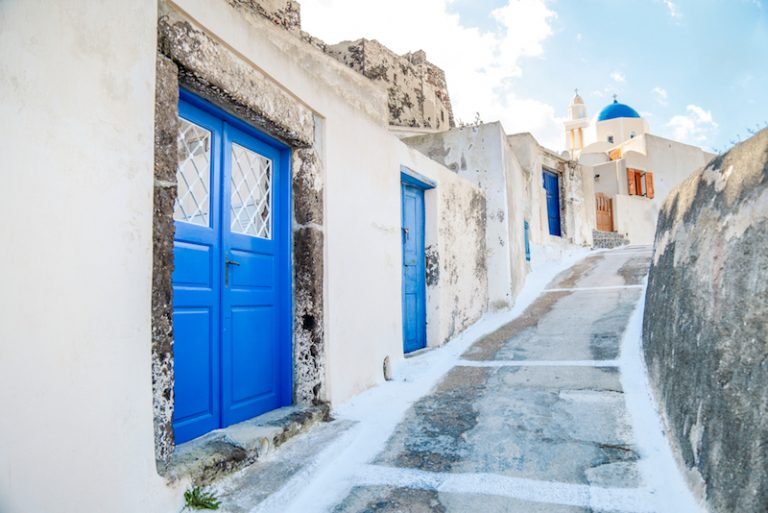

Visiter Santorin, c’est sillonner les pentes escarpées du volcan le plus actif des Cyclades, et arpenter les plus beaux villages de la mer Méditerranée
toutant profitant d’un séjour tout en bleu dans la mer Égée.
l’archipel de Santorin est mondialement réputé pour ses villages blancs à coupoles et fenêtres bleues où l’on en prend plein les yeux :
ciel drapé d’azur presque aussi profond que les eaux de la Méditerranée, où le bleu des portes, fenêtres et coupoles se superpose aux teintes sombres des falaises volcaniques qui plongent dans la mer, le tout contrastant singulièrement avec le blanc éclatant des maisons.
Si vous ne savez pas où aller pour vos vacances, ne cherchez plus : partez visiter Santorin, destination de charme figurant sur la liste des plus belles îles de toute la Grèce méridionale.
le charme de Santorin : les villages blancs, juchés à flancs de coteaux.
Visiter Oia
Village de charme situé sur la corniche nord-ouest de l’île, Oia offre un véritable décor de carte postale se résumant en deux mots : paradisiaque et idyllique.Oia – prononcer « Ía » – est perché en haut de la caldeira et est réputé pour être un haut lieu romantique de contemplation des couchers de soleil.
Au crépuscule, le soleil qui s’écrase à l’horizon laisse dans le ciel un jaune-rouge flamboyant qui enlumine les façades blanches et bleues du village pour le plus grand plaisir des amoureux.
Visiter Santorin à Oia, c’est aussi visiter des boutiques et des galeries d’art, des églises orthodoxes au dôme bleu – emblématiques des Cyclades -, s’offrir une séance santé avec un spa ou une fish pedicure, séjourner dans des hôtels de luxe et profiter de succulents restaurants avec vue imprenable sur les falaises abruptes de la caldeira, pour profiter d’une vue inédite et époustouflante.

Visiter Fira
Fira, ou Thera, est la ville principale de l’île.Immanquable pour vous qui partez visiter Santorin, Fira est construite sur un éperon rocheux surplombant la caldeira, au centre-nord de la côte ouest. La falaise est si abrupte que l’on aurait pu la penser trop escarpée pour être habitée.
Pourtant, 2348 personnes vivent dans leurs maisons qui s’imbriquent en terrasses, donnant l’impression d’un escalier géant tout revêtu de blanc, à 200 mètres d’altitude.
À Fira, rejoignez le vieux-port de Santorin, accessible à pied en descendant un dénivelé de 600 marches, à dos d’âne – peu éthique – et en téléphérique. Au cœur du village, vous trouverez beaucoup de commerces, de restaurants, et de boutiques de luxe. C’est donc un village à voir si vous aimez le shopping et les vacances gourmandes.

Visiter la ville d'Akrotiri
Akrotiri est une ville recouverte par les cendres d’une éruption volcanique qui aurait eu lieu en 1500 avant J-C.Relativement bien conservée, vous pourrez déambuler dans ses rues et découvrir les habitations et fresques de l’époque.
De quoi faire un surprenant bon dans le passé.
Envie de découvrir Santorin de façon originale ? À vos pagaies…prêts…ramez ! Embarquez dans un kayak et voguez sur les eaux turquoises de Santorin tels des apprentis aventuriers. Fun garanti !
Un souper de cuisine méditerranéenne, La ville vous offre des cours de cuisine. Les plus gourmands d’entre vous apprécieront de se retrouver derrière les fourneaux pour apprendre à cuisiner quelques spécialités de la région.
Le cratere Nea Kameni
De nombreux choix de visite en bateau du volcan et de la caldeira sont proposés par les tours opérateurs, car cela permet d’observer le volcan de Santorin dans toute sa splendeur.En sus, vous pourrez aussi de profiter de baignades dans les sources d’eau chaude de l’île (le volcan étant le plus actif de la région, il laisse émaner des odeurs de souffre).
En raison de l’affluence touristique, il faudra en revanche penser à réserver la veille au moins, les bateaux n’étant pas extensibles !
Après un trajet de 40 minutes en bateau, découvrez l'île de Nea Kameni, une île constituée d'un amas de cendres et de lave, à 150 métres au-dessus de la mer. Sur l'îlot, d'écouvrez le cratère et l'histoire du volcan.